StudIA · modalità Zaino · guida completa
Lo Zaino, spiegato come a un bambino di cinque anni
Immagina uno zaino di scuola. Ci metti dentro i tuoi fogli, i tuoi libri, le foto della lavagna, la registrazione della lezione. Poi arrivi al banco, apri lo zaino e ti metti a studiare: sottolinei, prendi appunti, ritagli le figure, disegni una mappa. Lo ZAINO di StudIA fa esattamente questo, sul computer.
StudIA ha due «stanze». Nella stanza CORSO il computer legge i tuoi materiali e ti costruisce lezioni, quiz e riassunti. Nella stanza ZAINO il computer non scrive niente: ci sono solo i tuoi documenti e tu. È la stanza per studiare sulle proprie dispense, sui PDF del professore, sulle foto delle schede.
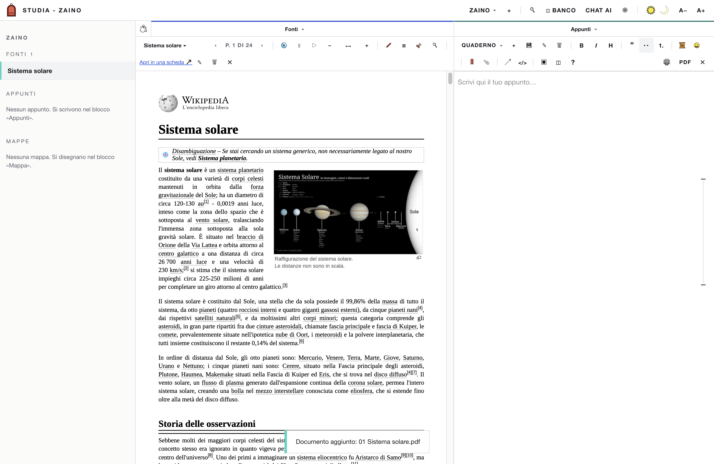
Ogni immagine si ingrandisce con un click (si chiude con Esc o cliccando fuori; le frecce ← → passano da un'immagine all'altra). Dove serve indicare un bottone preciso, c'è un pallino giallo attorno al puntatore o dei numeri cerchiati con la legenda sotto. Le parole fra «virgolette» sono esattamente quelle che leggi a schermo. Le combinazioni di tasti sono scritte per macOS (⌘); su Windows ⌘ diventa Ctrl e ⌥ diventa Alt.
Creare il primo zaino
Quando apri StudIA sei nella stanza dei corsi. Per andare nella stanza dello zaino c'è una porta sola: il logo «StudIA» in alto a sinistra, con il cappello da laurea. Non sembra un bottone, ma lo è: la prima volta batte piano piano per farsi notare, e il cappello si solleva quando ci passi sopra col mouse.
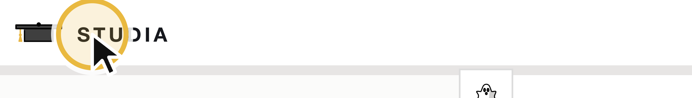
Passare da una stanza all'altra non chiude nulla: il corso che stavi leggendo resta esattamente com'era, e quando torni lo ritrovi. Anche lo zaino si ricorda dov'eri: quale documento avevi aperto, a che pagina, quale appunto, quale mappa.
I passi, uno alla volta
- Clicca il logo StudIA. La barra in alto cambia: al posto di CORSO · PERCORSO · LEZIONE compare la tendina «ZAINO ▾» con accanto un «+». La sidebar a sinistra ora si intitola «Zaino» e, se non hai ancora zaini, ti dice: «Nessuno zaino. Creane uno con il «+» accanto alla tendina.»
- Clicca il «+». Si apre un pannellino con un solo campo: «Nome della materia» (dentro c'è scritto, come esempio, «es. Diritto pubblico»).
- Scrivi il nome — qui abbiamo scritto Sistema solare — e premi «Crea» oppure Invio.
- Fatto. Compare un avviso in basso: «Zaino creato: Sistema solare». Lo zaino è vuoto, ma è pronto.
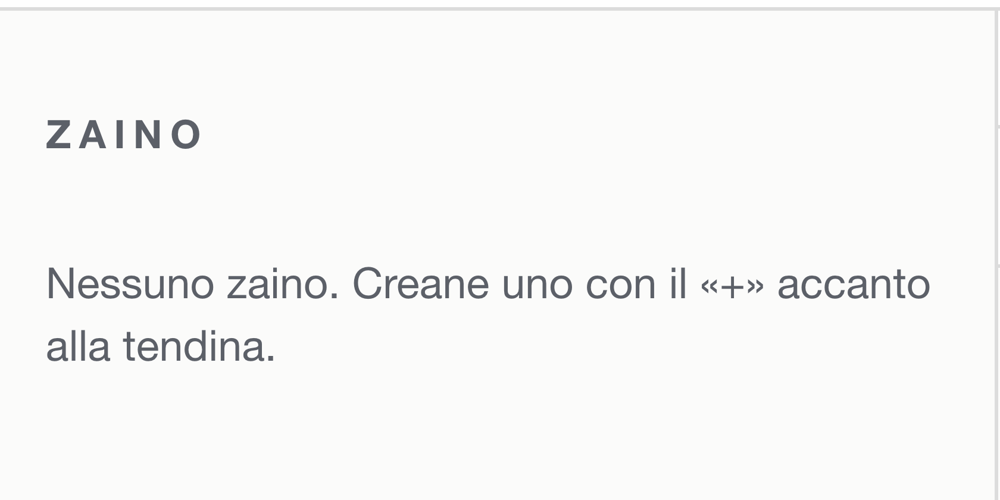
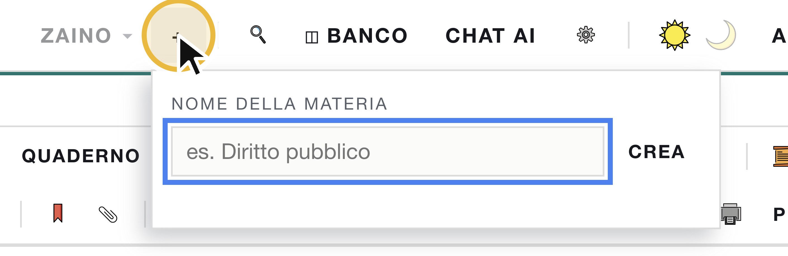
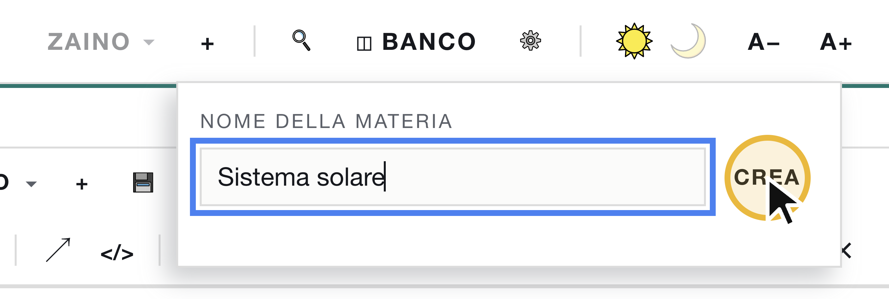
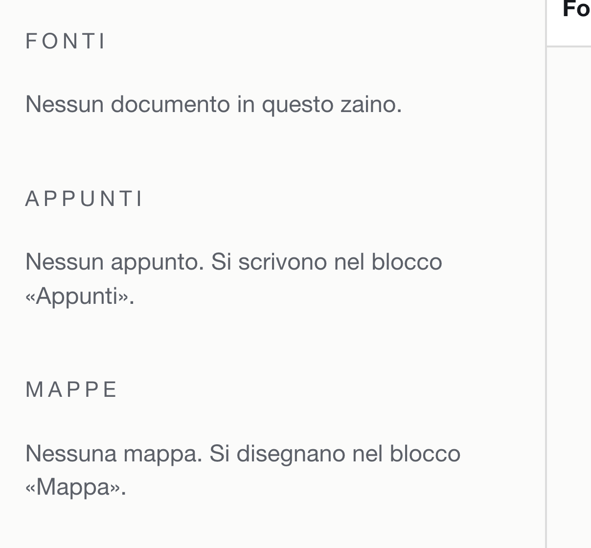
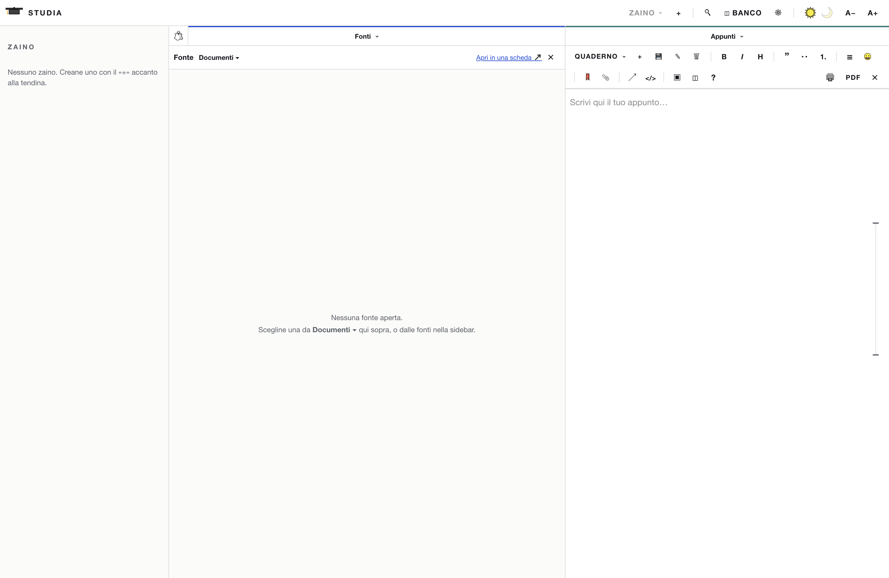
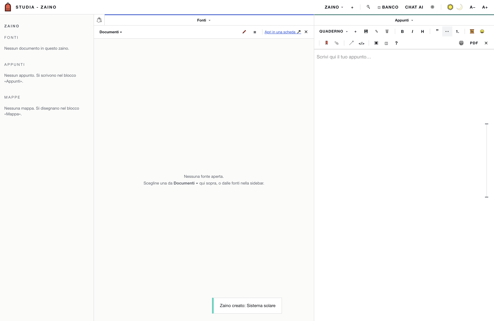
Che cosa succede al nome che scegli
- Il nome che scrivi è il titolo dello zaino (quello che leggi nella tendina). Dal titolo StudIA ricava un nome di cartella tutto minuscolo e senza accenti: «Sistema solare» →
sistema-solare; «Città & Società» →citta-societa. - Due zaini non possono avere lo stesso nome di cartella, e uno zaino non può chiamarsi come un corso che hai già: in quel caso il pannellino dice in rosso «esiste già un corso o uno zaino con questo nome». Se lasci il campo vuoto: «Dai un nome alla materia.»
- Il titolo si può leggere ma non si può cambiare dall'app (vedi che cosa non esiste ancora).
Più zaini, e come passare dall'uno all'altro
Puoi avere quanti zaini vuoi: uno per materia, per esempio. La tendina «ZAINO ▾» in alto li elenca tutti, con accanto quanti documenti PDF contengono. Ne scegli uno e l'app cambia zaino (avviso: «Zaino: Storia romana»). Ogni zaino ha il suo banco, i suoi appunti, le sue mappe: non si mescolano.
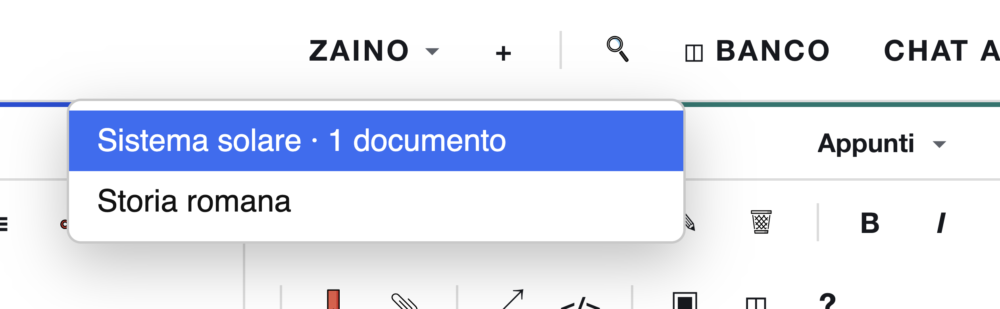
Ogni zaino è una cartella dentro la tua cartella dati («StudIA - file»), sotto Zaini/. Nasce con un biglietto d'identità (_zaino.md: titolo e data) e i cassetti vuoti. Puoi aprirla con il Finder o con Obsidian: sono file normali, tuoi.
StudIA - file/
Zaini/
sistema-solare/
_zaino.md titolo, data di nascita
MATERIALI/PDF/ i documenti (copie numerate)
MATERIALI/Indici-PDF/ il testo di ogni pagina, per la ricerca
APPUNTI/ i tuoi appunti (.md) e le parole chiave
MAPPE/ le tue mappe (.json)
ALBUM/ ritagli e foto
Come faccio a…
Il resto della guida è ordinato per pezzi (la barra, la sidebar, ogni strumento). Questo capitolo è ordinato per domande: parte da una cosa che vuoi fare e raccoglie in un posto solo gli strumenti che ci lavorano, i gesti, i tasti e dove finisce il risultato sul disco. Ogni passo rimanda al capitolo che lo spiega per esteso.
Come faccio a creare appunti?
Il quaderno è lo strumento Appunti. Si scrive in Markdown (segni semplici: **grassetto**, - elenco), si salva da solo, e si riempie in due modi: scrivendo, oppure portando dentro pezzi del documento — frasi, parole chiave, ritagli, foto — che entrano già con il rimando alla pagina da cui vengono.
- Apri il quaderno. Nella testata di un blocco scegli Appunti dalla tendina (o clicca un appunto in sidebar: StudIA glielo trova un blocco da sé). → I blocchi
- Crea l'appunto. Premi + nella barra: titolo e — nello zaino — «Nasce dal documento». Se hai un PDF aperto è già scelto; altrimenti PERSONALE. Invio conferma. Scorciatoia: comincia a scrivere e basta, alla quinta parola ti chiede il titolo. → Un appunto nuovo
- Scrivi. La barra ha grassetto, corsivo, titoli, elenchi, citazione, i sette riquadri 📜 (Nota, Importante, Definizione…), le emoji 😀 cercabili in italiano. Il bottone ? mostra tutte le notazioni. → La barra degli appunti · Riquadri ed emoji
- Porta dentro il documento. Seleziona una frase nel PDF e premi Appunta nella barra della selezione: la frase entra nell'appunto con il rimando
(pdf:01#p=3), senza riquadro o dentro uno dei sette. Se è corta (fino a tre parole piene) diventa anche parola chiave. → «Appunta» · La barra della selezione - Cita il punto. 🔖 «Cita il punto che stai guardando» mette la pagina del PDF o il minuto del video (il minuto anche con ⌘⇧C, mentre scrivi); 📎 ti fa scegliere un altro documento e la pagina. → Importare
- Aggiungi parole chiave, ritagli e foto. Trascina un chip dello strumento Parole chiave nell'editor (o tasto destro → «Negli appunti»); trascina una card dei Ritagli o dell'Album Foto, o dalla bolla «Ritaglio salvato» scegli «Metti nell'appunto aperto». → Importare · Ritagli
- Rileggi — e correggi lì. ▣ anteprima (⌘J) o ◫ affiancata (F9), dove si scrive anche nella parte resa: i riquadri prendono colore, i rimandi diventano link che aprono il documento alla pagina, le immagini si vedono. → L'anteprima
- Non salvare: si salva da solo, 1,8 secondi dopo l'ultimo tasto (● in barra finché non è scritto) e subito quando cambi appunto o chiudi. ⌘S se ti fa stare tranquillo. → Il salvataggio
- Ritrova. La tendina QUADERNO elenca gli appunti del documento aperto e poi gli altri; la sidebar li elenca tutti; la lente in barra (🔍, o ⌘F quando il fuoco non è sul documento) cerca anche dentro gli appunti, e la sezione «Appunti» dei risultati sta sempre in cima. → La tendina · La lente
| Strumento | Dove | Che cosa ci fai per gli appunti |
|---|---|---|
| Appunti | un blocco del banco | scrivi, crei (+), rinomini (✎), stampi (🖨 ⌘P), salvi in PDF |
| Fonti (il PDF) | un altro blocco | selezioni il testo → Appunta, Keyword, colori; 🔖 cita la pagina |
| Player | un blocco | 🔖 o ⌘⇧C segnano il minuto negli appunti |
| Parole chiave | un blocco | trascini un chip nell'editor → [perielio](pdf:01#p=4) |
| Ritagli · Album Foto | un blocco | trascini una card nell'editor →  |
| Sidebar · Lente | a sinistra · in barra | apri un appunto · cerca dentro gli appunti |
Sul disco: Zaini/<zaino>/APPUNTI/Titolo.md — un file di testo per appunto, che puoi aprire con qualunque programma; le evidenze e le parole chiave in APPUNTI/_evidenze.json. → La cartella dello zaino
Come faccio a creare una mappa?
La mappa è lo strumento Mappa, nel registro Mie (nello zaino «Generata» è vuota: non c'è nessuna lezione da cui generarla). È una tela: nodi che scrivi tu, legami con una parola sopra, e nodi che arrivano dal documento — una parola chiave trascinata, un ritaglio, una frase «Alla mappa» — con il pallino che riapre la fonte.
- Apri la Mappa e vai su «Mie». Nella testata di un blocco scegli Mappa; in barra premi Mie. → La barra della mappa
- Crea la mappa. + → «Titolo della nuova mappa» → conferma. Nasce con un nodo solo: il titolo. → Una mappa nuova
- Aggiungi nodi dalla tastiera. Seleziona un nodo, Tab = un figlio, Invio = un nodo accanto; la casella del testo si apre da sola, Invio conferma. Doppio click sul vuoto = nodo libero dove clicchi. F2 (o doppio click su un nodo) rinomina.
- Collega. Trascina dalla porta (il cerchietto sul bordo) fino all'altro nodo, o tasto destro → «Collega a…». Il legame chiede subito la sua parola («ha un», «causa»…); doppio click sul legame per cambiarla, tasto destro per invertirlo o dargli due punte.
- Porta dentro il documento. Trascina un chip delle Parole chiave sulla tela (il nodo prende il colore dell'evidenza e il pallino della fonte); dalla card di un Ritaglio «Metti nella mappa» → un nodo-immagine ridimensionabile; dalla selezione del PDF Alla mappa → un nodo col testo (ma senza il rimando alla pagina). → Importare
- Sistema la vista. Trascina i nodi (la posizione resta fissata); tasto destro sul vuoto → il motore (Albero, DAG, Percorso, Anelli); TD / SX dall'alto o da sinistra; ⚙ distanze e misure; ⤢ adatta alla finestra; le memorie 1–5 per salvare e richiamare una disposizione. ⌘Z annulla fino a 20 passi.
- Torna alla fonte. Il pallino nell'angolo di un nodo nato da una parola chiave o da un ritaglio riapre il documento alla pagina giusta; dal menu del nodo, «Vai alla fonte». → Il pallino della fonte
- Non salvare: si salva da sola, 1,2 secondi dopo ogni modifica e prima di chiuderla. ✎ rinomina e le assegna un documento; 🖨 stampa, PDF la salva in foglio coricato. → Rinominare
| Strumento | Dove | Che cosa ci fai per la mappa |
|---|---|---|
| Mappa (registro Mie) | un blocco del banco | crei (+), disegni nodi e legami, motore, memorie, ⚙ vista, stampa e PDF |
| Fonti (il PDF) | un altro blocco | selezioni il testo → Alla mappa (nodo) o Keyword (chip da trascinare dopo) |
| Parole chiave | un blocco | trascini un chip sulla tela → nodo colorato con il pallino della fonte |
| Ritagli · Album Foto | un blocco | «Metti nella mappa» o trascini la card → nodo-immagine |
| Sidebar | a sinistra | la sezione MAPPE elenca le tue mappe; click per aprirne una |
Sul disco: Zaini/<zaino>/MAPPE/Titolo.json — una mappa per file. Non c'è esportazione in PNG/SVG: c'è la stampa e il PDF. → La cartella dello zaino
La forma che serve è Tre · colonna sinistra intera o Quattro blocchi: il documento da una parte, il quaderno e la mappa dall'altra, e in un quarto blocco le Parole chiave o i Ritagli da cui trascinare. Si sceglie da ◫ BANCO. → Le forme del banco
La finestra: barra in alto, sidebar, banco e blocchi
La finestra dello zaino ha tre parti. In alto una barra con pochi comandi. A sinistra la sidebar, che è l'elenco di ciò che c'è nello zaino. Tutto il resto è il banco: uno spazio che puoi dividere in blocchi, e in ogni blocco metti uno «strumento» (il documento, gli appunti, la mappa…). Come un banco vero: da una parte il libro aperto, dall'altra il quaderno.
La barra in alto
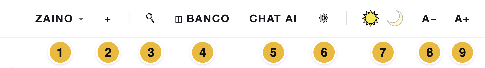
- ZAINO ▾ — la tendina degli zaini: quale zaino hai aperto, e per cambiarlo.
- + — crea uno zaino nuovo («Crea uno zaino nuovo»).
- 🔍 Lente — cerca dentro i documenti dello zaino, una voce per pagina (anche ⌘F).
- ◫ BANCO — «Come dividere lo schermo»: sceglie la forma del banco.
- ⚙ Impostazioni — fra le schede c'è «Zaino»: da lì si rinominano ed eliminano gli zaini, e si apre questa guida.
- ☀️ / 🌙 — tema chiaro o scuro.
- A− — testo più piccolo.
- A+ — testo più grande.
Il tema (chiaro/scuro) e la dimensione del testo non vengono ricordati alla riapertura dell'app: ripartono sempre dal chiaro e dalla misura normale.
La sidebar: i tre cassetti
La sidebar elenca ciò che sta nello zaino, in tre sezioni sempre nello stesso ordine: FONTI (documenti, video e audio), APPUNTI e MAPPE. Accanto al titolo c'è il conteggio. La voce «accesa» (bordo colorato a sinistra e grassetto) è quella aperta adesso.
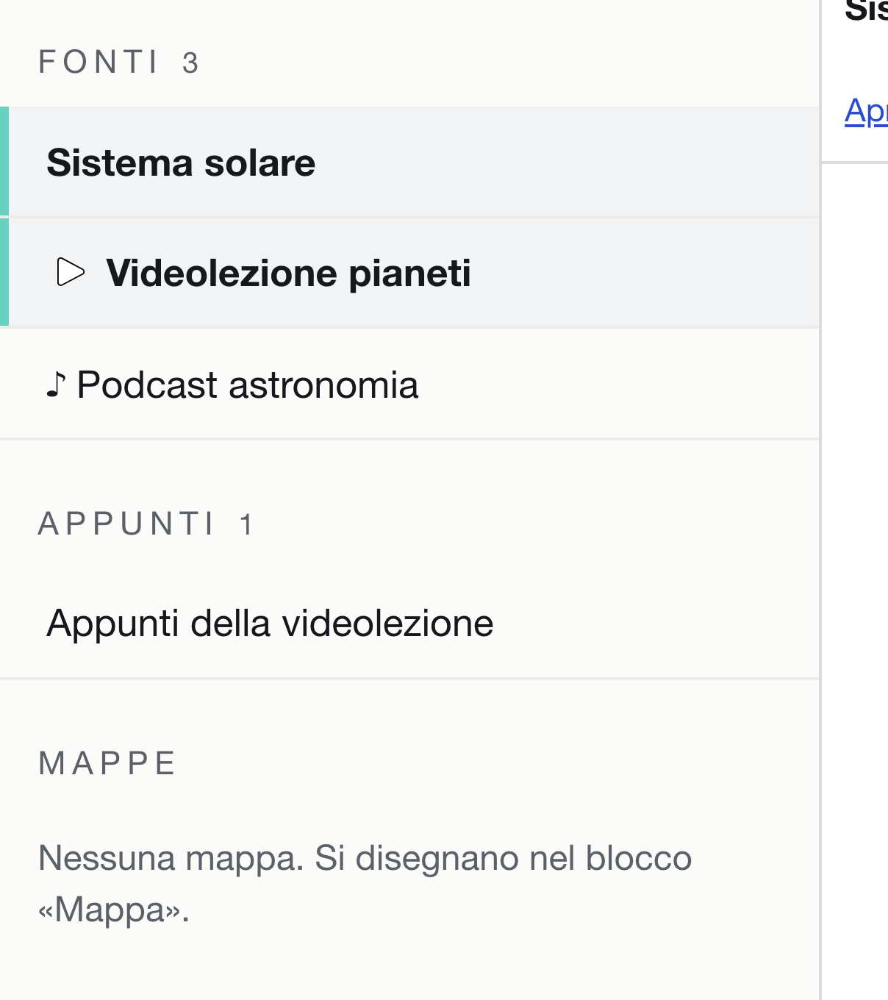
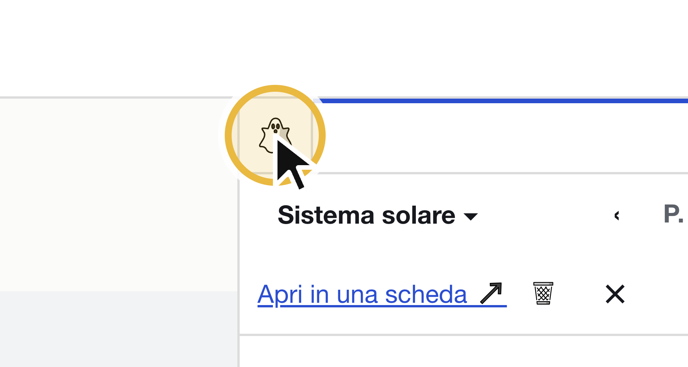
- Click su una fonte → si apre nel blocco Fonti (i PDF) o nel Player (video e audio), alla pagina o al minuto dove eri rimasto.
- Click su un appunto → si apre nel blocco Appunti. Click su una mappa → si apre nel blocco Mappa.
- Se lo strumento non è a schermo, StudIA glielo fa: lo mette in un blocco vuoto, se ce n'è uno; altrimenti allarga il banco di un blocco.
- Sulle voci della sidebar non c'è il tasto destro: per togliere un documento si usa il cestino nella barra del documento (vedi Eliminare le fonti).
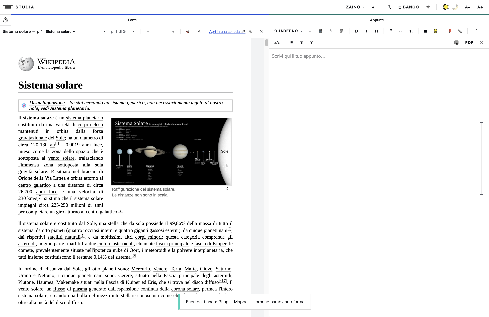
Il banco: le forme
Il banco è una griglia. Con il bottone ◫ BANCO scegli in quanti blocchi dividerlo e come. Ci sono dodici forme pronte più una casella «+» per disegnare la tua. Quella in uso ha il bordo verde-acqua.
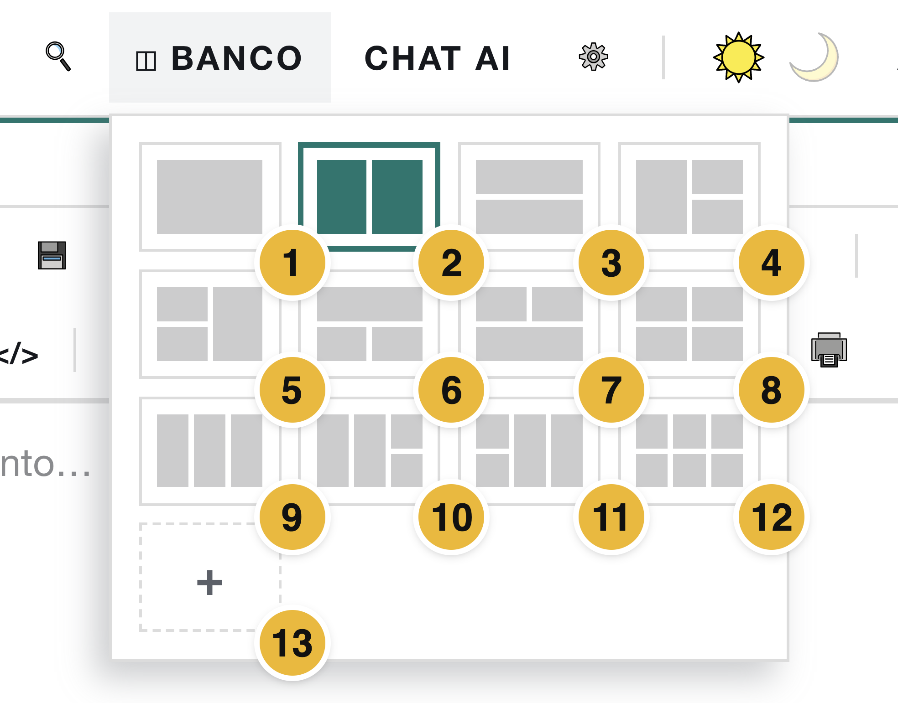
- Un blocco solo
- Due · affiancati (la forma di fabbrica dello zaino)
- Due · impilati
- Tre · colonna sinistra intera
- Tre · colonna destra intera
- Tre · riga sopra intera
- Tre · riga sotto intera
- Quattro blocchi
- Tre · colonne affiancate
- Tre colonne · la terza divisa
- Tre colonne · la prima divisa
- Sei blocchi
- Disegna una forma tua (trascini sui riquadri di una griglia 3×3; il tasto destro su una forma tua la elimina, senza chiedere)
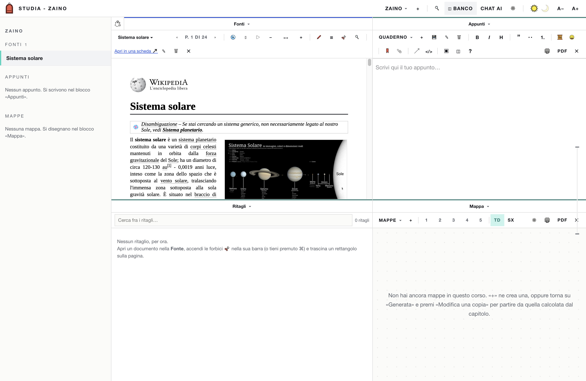
I blocchi: che cosa ci metto dentro
Ogni blocco ha una testata con una tendina. La tendina dice quale strumento c'è nel blocco e ti lascia cambiarlo. Nello zaino gli strumenti possibili sono otto:
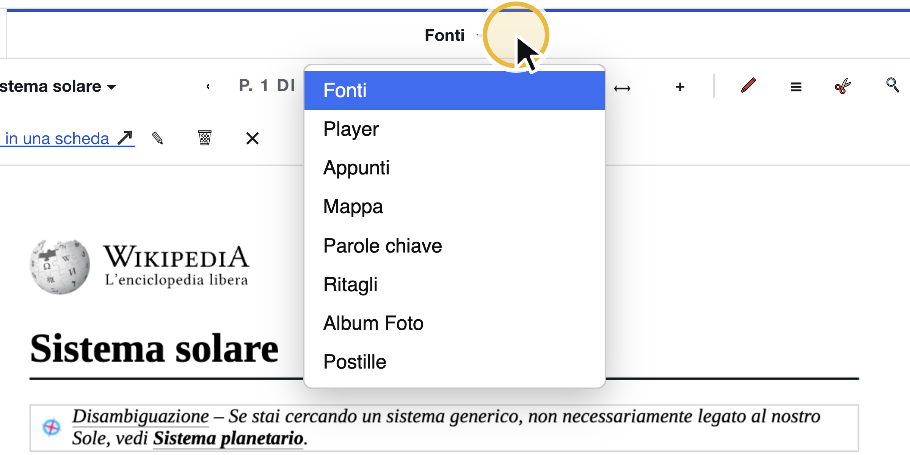
- Uno strumento sta in un blocco solo. Se scegli «Mappa» in un blocco dove c'era «Appunti», e la mappa stava già in un altro blocco, i due blocchi si scambiano il contenuto. Non si trascina niente: si sceglie dalla tendina del blocco di destinazione.
- Per svuotare un blocco si chiude la mappa con la sua ✕ (o con Esc): il blocco resta lì, vuoto, con la scritta «Scegli uno strumento qui sopra.» e la tendina che mostra «—». La ✕ delle Fonti e del Player invece chiude solo il documento o il media: il blocco resta «Fonti» (o «Player»), pronto per un'altra fonte.
- Se passi a una forma con meno blocchi, gli strumenti che escono non spariscono: aspettano da parte. Un avviso lo dice: «Fuori dal banco: Ritagli · Mappa — tornano cambiando forma».
- La riga colorata in cima a un blocco dice la famiglia: blu = fonti (documento, player, confronto), verde-acqua = quaderno (appunti, mappa, parole chiave, ritagli, foto).
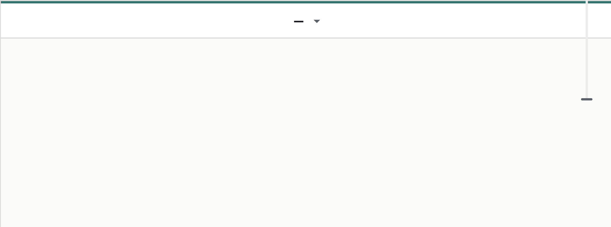
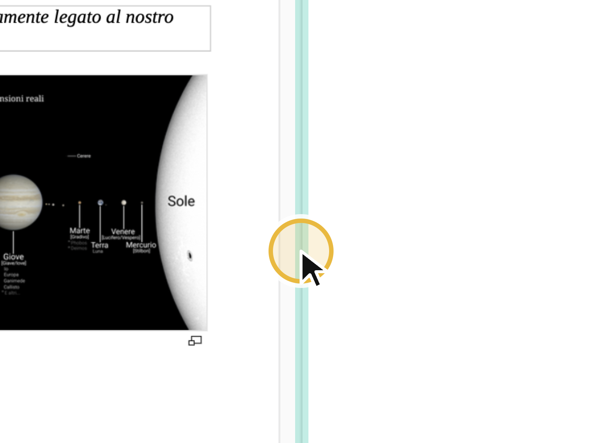
Un blocco a tutto schermo, e ritorno
Vuoi leggere il documento senza distrazioni? Doppio click sulla testata del blocco (non sulla tendina, ma sullo spazio accanto). Il banco passa a «Un blocco solo» con dentro quello strumento; un avviso dice «A tutto banco — doppio click sulla testata per tornare». Un altro doppio click e tutto torna com'era, misure comprese.
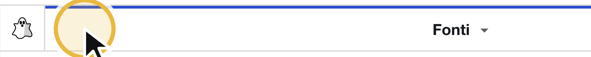
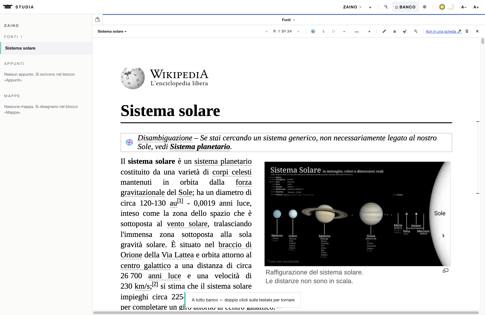
Ogni zaino ricorda la propria forma, gli strumenti nei blocchi e le misure dei divisori. Ricorda anche che cosa avevi aperto. Questa memoria sta nel computer che stai usando (non nella cartella dello zaino): se copi lo zaino su un altro computer riparte dalla forma di fabbrica, ma la pagina a cui eri arrivato nel documento quella sì, viaggia con lo zaino.
La lente: cercare dentro i documenti
La lente in alto (o ⌘F quando non hai un documento aperto, o quando stai scrivendo altrove, per esempio negli appunti) cerca in tutte le pagine di tutti i PDF dello zaino e in tutti i tuoi appunti. Ogni risultato è una pagina o un appunto: cliccando una pagina il documento si apre lì e la parola viene accesa nel testo; cliccando un appunto si apre l'appunto. Se hai un documento aperto e il fuoco è lì — o non è in nessun campo — ⌘F apre invece la ricerca dentro quel documento (la vediamo tra poco).
Più parole cercano tutte le parole, dove capitano: sistema solare trova anche una pagina che dice «sistema nervoso» in cima e «anno solare» in fondo. Mettendole fra virgolette — "sistema solare" — chiedi quella frase in quell'ordine, e nient'altro. Vale anche per una parola sola: per si trova anche dentro «perché» e «periodo», "per" soltanto quando è una parola intera. Funzionano anche le virgolette curve e le «caporali»: sono quelle che la tastiera mette da sola.
La stessa convenzione vale nella ricerca dentro il documento: là il conto dice «intera» quando le virgolette sono attive, così sai che stanno lavorando.
I risultati sono raggruppati per documento, e gli appunti stanno tutti sotto «Appunti», che è sempre la prima sezione dell'elenco: quello che hai scritto tu viene prima di quello che hai letto. Un appunto appena scritto si trova subito: non serve riavviare né cambiare zaino. Dentro l'appunto la parola non viene accesa — ci arrivi tu, che l'hai scritta.
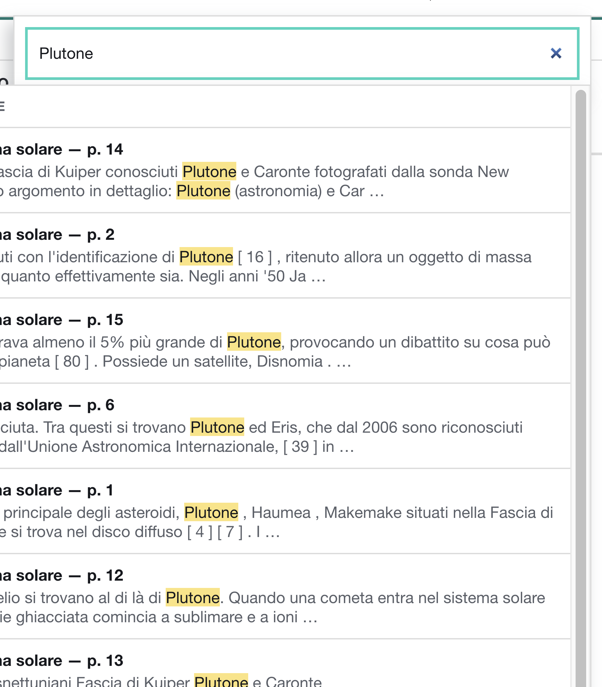
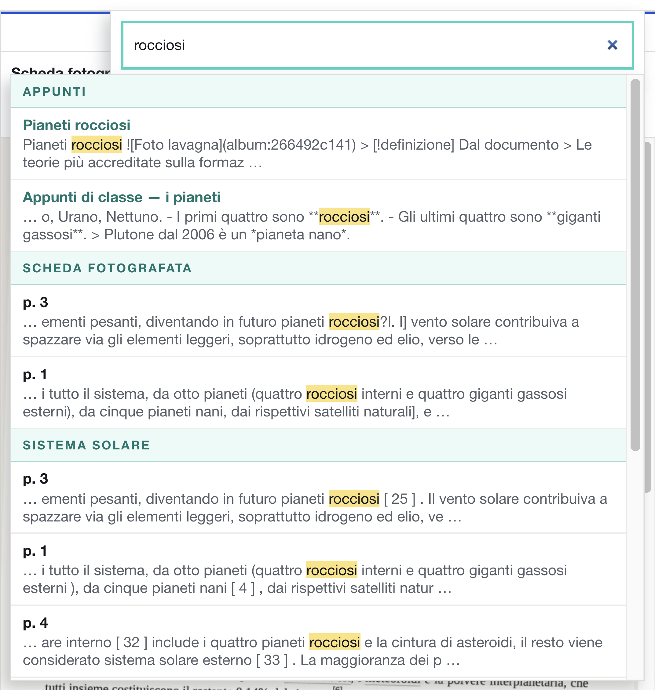
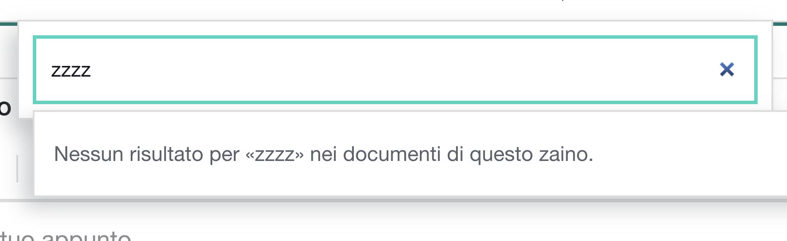
Tema scuro e testo grande
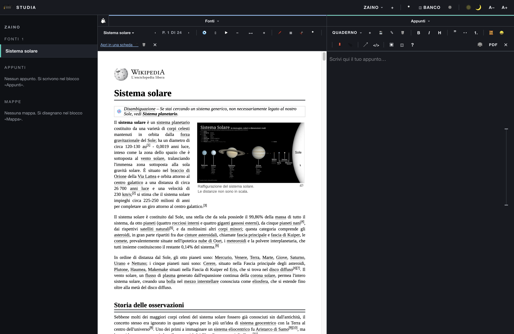
Che cosa c'è dentro ogni blocco (gli strumenti)
Otto strumenti, uno per volta. Qui li apriamo tutti e guardiamo la loro barra dei comandi. Ogni barra segue la stessa grammatica: prima che cosa stai guardando, poi i comandi che ci lavorano sopra, in fondo a destra i comandi che si premono per ultimi (stampa, chiudi).
Fonti — il documento PDF
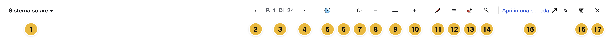
- Il selettore «Documenti ▾» — a documento aperto mostra il suo titolo. Un click e scegli un altro documento dello zaino. Accanto a ciascuno c'è la pagina dove eri rimasto («— p. 9»).
- ‹ Pagina precedente.
- p. 1 di 24 — dove sei. (Non si scrive un numero qui: si va avanti con le frecce, con la rotella, o cliccando un rimando.)
- › Pagina successiva.
- − Riduci.
- ⟷ / ⤢ / 74% — lo zoom a tre stati (sotto).
- + Ingrandisci.
- ✂ Forbici — ritaglia un'area della pagina e la mette nei Ritagli («o tieni premuto ⌘ e trascina»).
- 🔍 Cerca dentro questo documento (⌘F).
- Apri in una scheda ↗ — apre il PDF in una finestra a parte, alla pagina a cui l'hai aperto (non segue lo sfogliare: se sei andato avanti con le frecce, la finestra parte comunque dalla pagina di apertura).
- 🗑 — «Togli questo documento dallo zaino» (c'è solo nello zaino: vedi Eliminare le fonti).
- ✕ Chiudi il documento (anche Esc, se il fuoco non è nell'editor).
Quando un documento è fotografato (senza testo) compare un comando in più, Aa↗, di cui parliamo alla fine (quali PDF e come vengono lavorati).
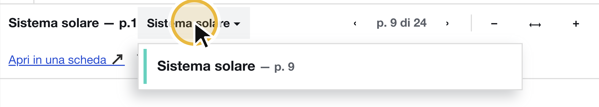
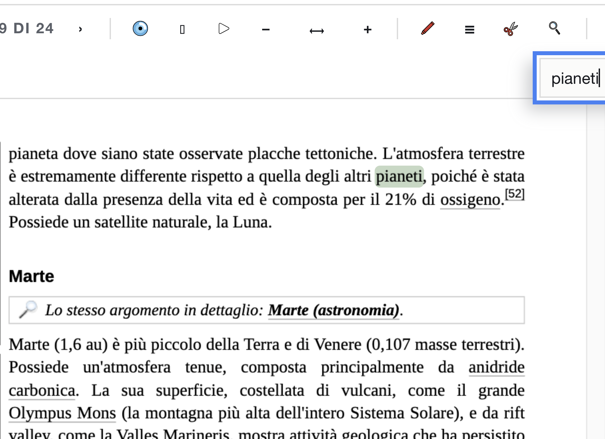
"per" non trova «perché»), e allora il conto aggiunge «intera». Si esce con Esc, con la ✕ della barretta o premendo di nuovo 🔍: cliccare sulla pagina non chiude la ricerca, così puoi cambiare lo zoom o girare pagina senza perderla.Lo zoom a tre stati
Il bottone in mezzo a − e + non è un numero fisso: è un interruttore. ⟷ vuol dire «adattato alla larghezza del blocco» (segue il blocco: se lo allarghi, la pagina si allarga). ⤢ vuol dire «pagina intera». Un click passa dall'uno all'altro. Se premi + o − (o ⇧+rotella sopra la pagina) diventa una percentuale scelta a mano, e un click sul numero torna ad adattarsi. Lo zoom viene ricordato.
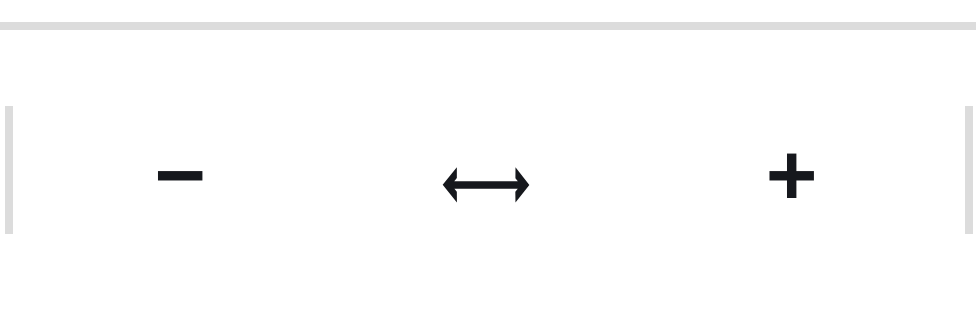
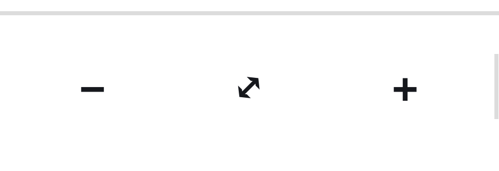
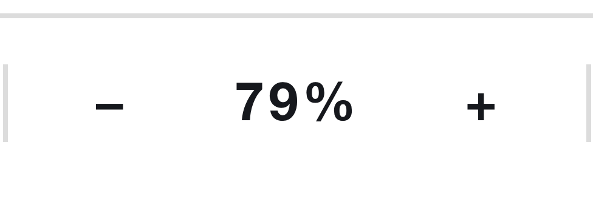
Selezionare testo: la barra della selezione
Trascina il mouse sul testo del PDF (sì, si seleziona come in un testo normale) e compare da sola una barra con tutto quello che puoi fare con quel pezzo di testo. La stessa barra si apre col tasto destro dentro la selezione.
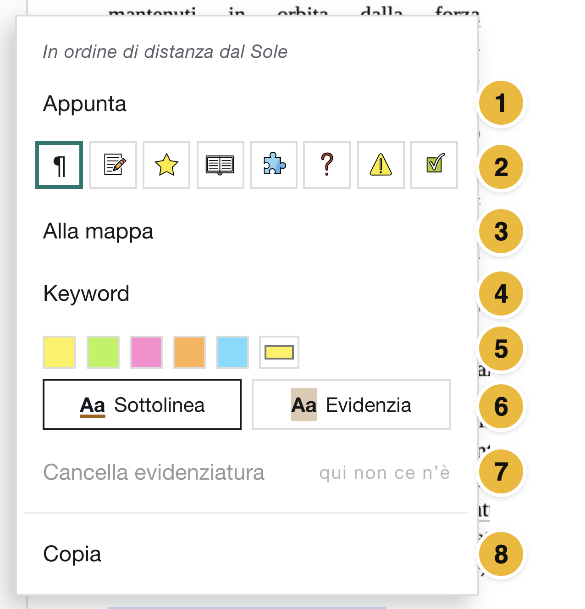
- Appunta — copia il testo nell'appunto aperto, con il rimando alla pagina.
- Come appuntare — otto stili: ¶ senza riquadro, poi sette riquadri colorati (Nota 📝, Importante ⭐, Definizione 📖, Esempio 🧩, Dubbio ❓, Attenzione ⚠️, Da fare ✅). Lo stile che scegli resta quello predefinito.
- Alla mappa — fa un nodo di mappa con quel testo.
- Keyword — evidenzia il testo e, se è corto (fino a 3 parole «piene»), lo mette fra le parole chiave.
- I colori — cinque colori più un selettore libero: cliccarne uno evidenzia subito.
- Sottolinea / Evidenzia — una riga sotto il testo, oppure il fondo pieno come un evidenziatore.
- Cancella evidenziatura — toglie l'evidenza che sta sotto la selezione (spenta, «qui non ce n'è», se non ce n'è).
- Copia — negli appunti del computer.
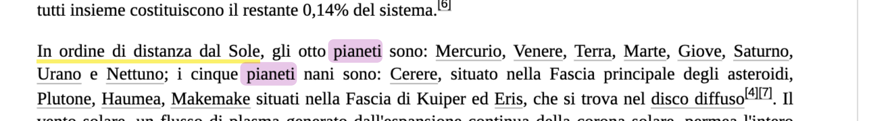
Confronto — un secondo documento accanto
«Confronto» è un secondo visualizzatore, per tenere due PDF affiancati (o due pagine dello stesso). Ha il suo selettore «Documenti ▾», le sue frecce e il suo zoom, indipendenti dalla Fonte. Ma è solo per leggere e copiare: lì dentro la selezione non apre nessuna barra, niente evidenze, niente ritagli. Il vuoto lo dice: «Qui si legge e si copia: evidenze, ritagli e «appunta» stanno nella Fonte.»
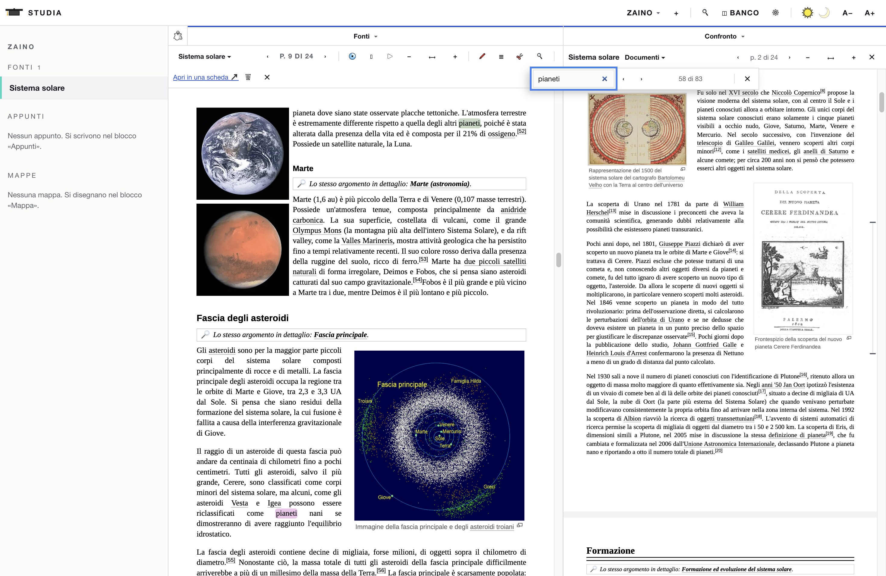
Player — video e audio
Il Player non è nella forma di fabbrica: compare da solo quando importi un video o un audio, oppure lo scegli dalla tendina di un blocco. Video e audio sono lo stesso strumento (un audio è un video senza immagine).
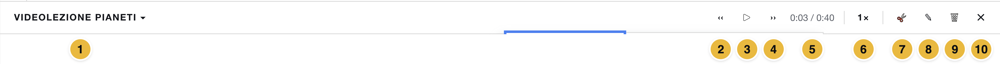
- Media ▾ — quale video/audio è aperto; click per cambiarlo (con «▶» i video, «♪» gli audio, e il minuto dove eri: «— 0:03»).
- ‹‹ Indietro di 10 secondi (J).
- ▶ / ❚❚ Riproduci o metti in pausa (K o spazio).
- ›› Avanti di 10 secondi (L).
- 0:02 / 0:40 — dove sei e quanto dura.
- 1× — velocità: 0,75 · 1 · 1,25 · 1,5 · 1,75 · 2 (< e >).
- ✂ — solo sui video: ritaglia un fermo immagine nei Ritagli.
- ✎ — «Segna questo minuto negli appunti» (⌘⇧C): mette in pausa e scrive nell'appunto una riga cliccabile col minuto.
- 🗑 — «Togli questo media dallo zaino».
- ✕ Chiudi il player.
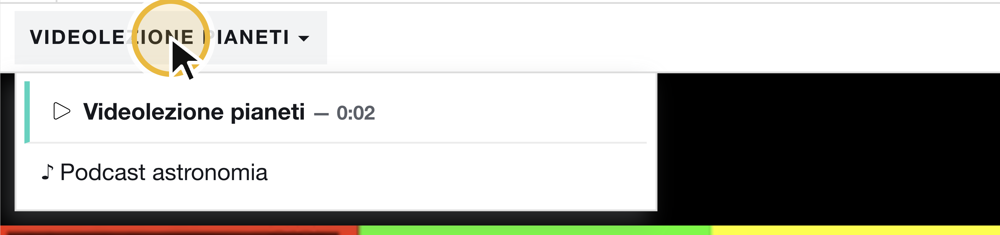
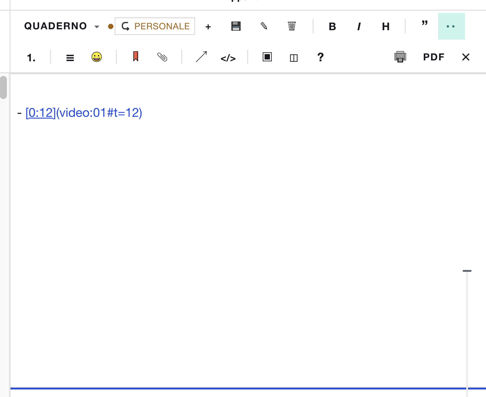
- [0:12](video:01#t=12): cliccandolo il video riparte da lì. Se non c'è un appunto aperto, ne crea uno.K, J, L, spazio, < > funzionano solo quando non stai scrivendo (se no scrivendo «job» in un appunto il video salterebbe indietro due volte). ⌘⇧C invece funziona sempre, anche mentre scrivi: è fatto apposta per prendere appunti mentre la lezione va avanti. Nello zaino video e audio non vengono trascritti: si guardano e si citano al secondo.
Appunti — il quaderno
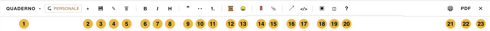
- QUADERNO ▾ — la tendina degli appunti: quale appunto è aperto, e per aprirne un altro.
- + Nuovo appunto.
- 💾 Salva (⌘S) — ma salva anche da solo, 1,8 secondi dopo che smetti di scrivere.
- ✎ Rinomina appunto (e, nello zaino, cambia il documento a cui appartiene).
- 🗑 Elimina appunto.
- B grassetto (⌘B).
- I corsivo (⌘I).
- H titolo (⌘H).
- ” citazione.
- •• elenco puntato (⌘L).
- 1. elenco numerato.
- 📜 «Inserisci un riquadro (callout)»: Nota, Importante, Definizione, Esempio, Dubbio, Attenzione, Da fare.
- 😀 «Inserisci un'emoji (OpenMoji)»: una tavolozza con più di duemila simboli, cercabili in italiano.
- 🔖 «Cita il punto che stai guardando»: la pagina del documento aperto, oppure il minuto del player.
- 📎 «Cita un materiale di questo contenitore»: scegli un documento dall'elenco e la pagina (o il minuto).
- ↗ link (⌘K).
- </> codice.
- ▣ anteprima (il testo come verrà letto) (⌘J).
- ◫ scrittura e anteprima affiancate (F9).
- ? «Come si scrive in StudIA»: la tabella di tutte le notazioni.
- 🖨 Stampa appunto (⌘P).
- PDF Salva l'appunto come PDF.
- ✕ Chiudi editor (salva prima, se c'è qualcosa in sospeso).
Il quaderno si scrive in Markdown, cioè con segni semplici (**grassetto**, - elenco, > citazione). Il bottone ? ti mostra tutte le notazioni con un esempio. Come si creano, si scelgono, si rinominano gli appunti lo vediamo nel capitolo Appunti e mappe.
Mappa — la mappa concettuale
La Mappa ha due «registri»: Generata (una mappa calcolata dalle lezioni di un corso: nello zaino non serve, e può mostrare la lezione dell'ultimo corso aperto — o dire che non c'è niente da mappare) e Mie (le mappe che disegni tu, salvate nella cartella dello zaino). Nello zaino si usa sempre «Mie».
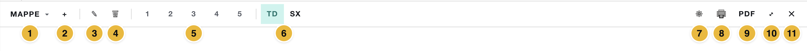
- Generata / Mie — il registro. Nello zaino: Mie.
- MAPPE ▾ — la tendina delle tue mappe («titolo · N nodi»).
- + Nuova mappa vuota (nasce con un nodo solo: il titolo).
- ✎ Rinomina la mappa (e, nello zaino, il documento a cui appartiene).
- 🗑 Elimina la mappa.
- 1 2 3 4 5 — cinque «memorie» di disposizione: click su una vuota (o tasto destro) per salvarci la posizione dei nodi di adesso, click su una piena per richiamarla.
- TD / SX — dall'alto verso il basso, o da sinistra verso destra.
- ⚙ «Aggiustamenti della vista»: distanze, dimensione del testo, larghezza delle card, stile delle linee, parole sui legami.
- 🖨 Stampa la mappa (⌘P).
- PDF Salva la mappa come PDF (foglio coricato).
- ⤢ Adatta la mappa alla finestra.
- ✕ Chiudi la mappa (Esc).
Il motore di disposizione (Albero, DAG, Percorso, Anelli) si cambia col tasto destro sul vuoto della tela. Non c'è un bottone «Salva»: la mappa si salva da sola poco dopo ogni modifica (un pallino giallo ● in barra dice «modifiche non salvate» finché non è scritta). Non c'è esportazione in PNG/SVG: solo stampa e PDF.
Parole chiave — le tue evidenze corte
Ogni volta che evidenzi un pezzetto di testo corto (fino a tre parole «piene»: gli articoli e le preposizioni non contano) diventa una parola chiave: un chip colorato del colore della sua evidenza. Lo strumento le raccoglie tutte, di tutti i documenti dello zaino, con un campo di ricerca e un bottone «Aa» per ordinarle.
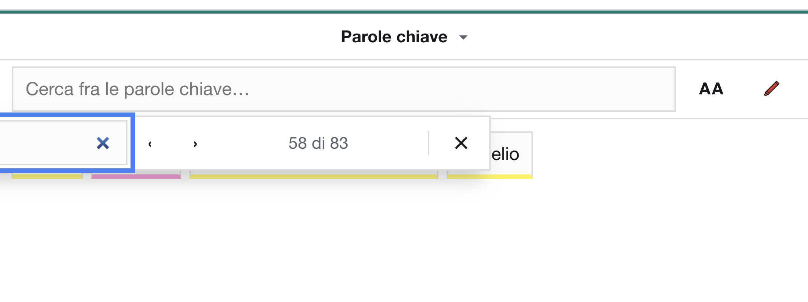
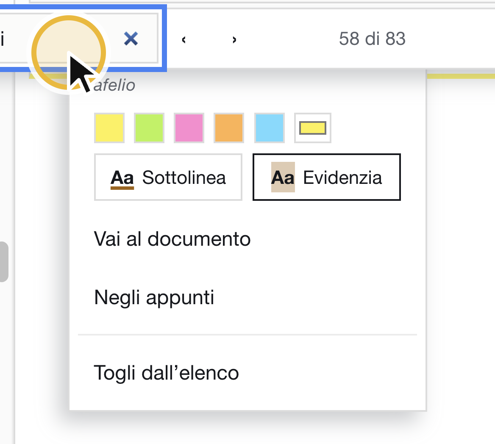
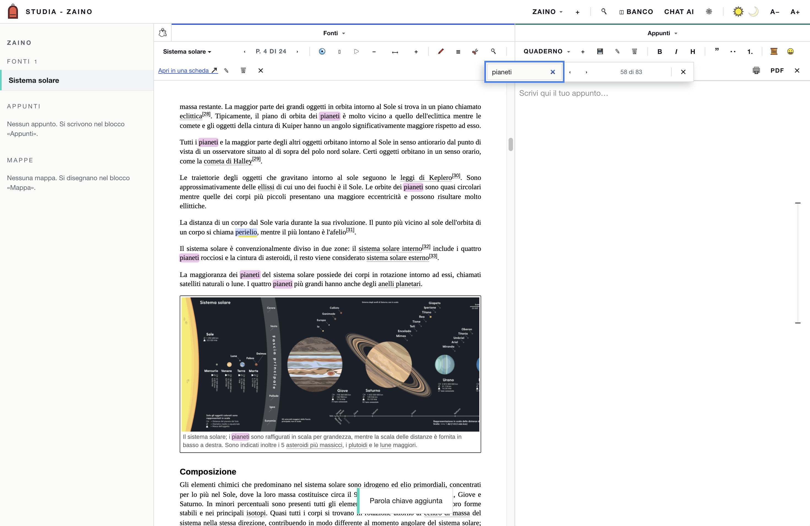
Un chip si può anche trascinare: nell'editor degli appunti (ci lascia [parola](pdf:01#p=4), un link cliccabile), oppure sulla mappa (ci fa un nodo del suo colore, con il pallino della fonte che riapre la pagina).
Ritagli — le figure che hai ritagliato
Con le forbici ✂ della Fonte (o tenendo premuto ⌘ e trascinando) disegni un rettangolo sulla pagina: quel pezzo diventa un'immagine nell'archivio Ritagli. Lo stesso vale per un fermo immagine di un video e per un pezzo di una foto.
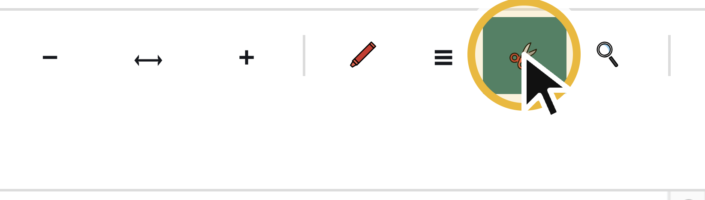
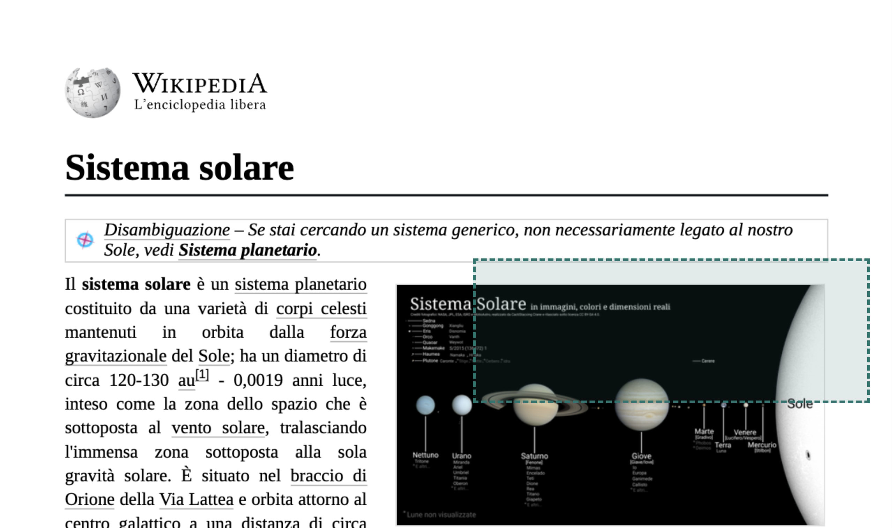
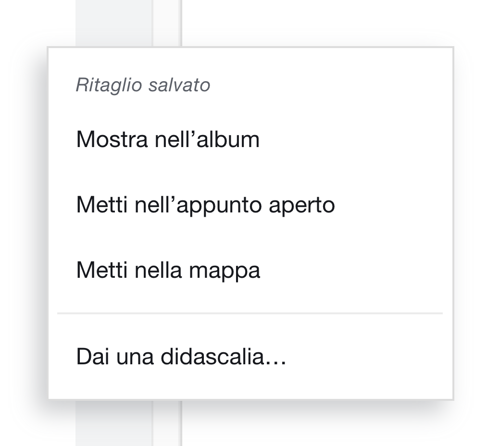
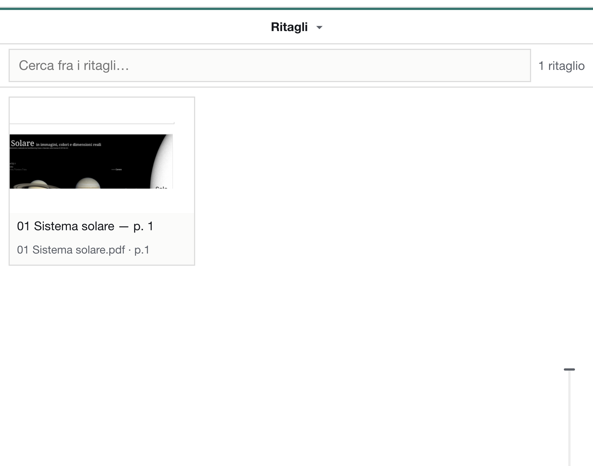
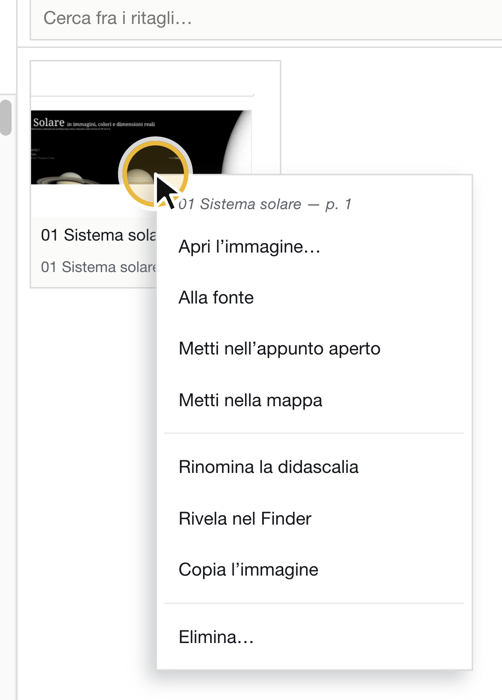
Album Foto — le immagini che porti tu
Le foto che trascini nella finestra (la lavagna, una scheda fotografata col telefono) finiscono nell'Album Foto. Ritagli e Album Foto sono lo stesso archivio visto con due filtri: nei Ritagli ci sono i pezzi presi da documenti, video e foto; nell'Album Foto le immagini intere che hai portato dentro.
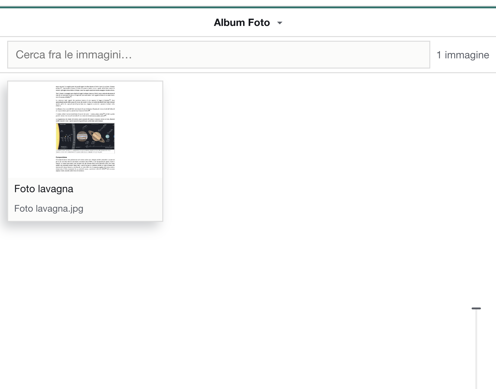
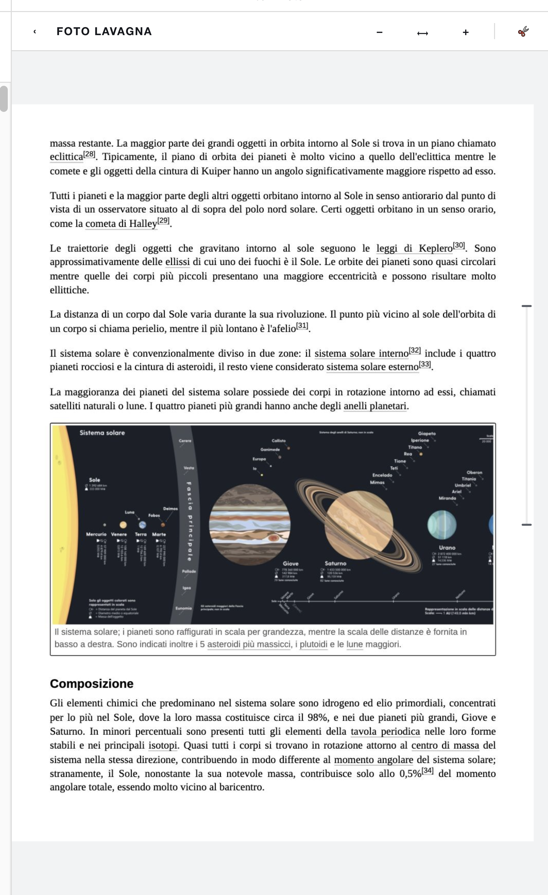
Le fonti: come si portano dentro e dove finiscono
Nello zaino c'è un solo gesto per mettere dentro le cose: trascinare i file sulla finestra. Non c'è un bottone «Importa» né una finestra «Scegli file». Prendi il file dal Finder (o dalla scrivania), lo trascini sopra StudIA, e lo lasci andare.
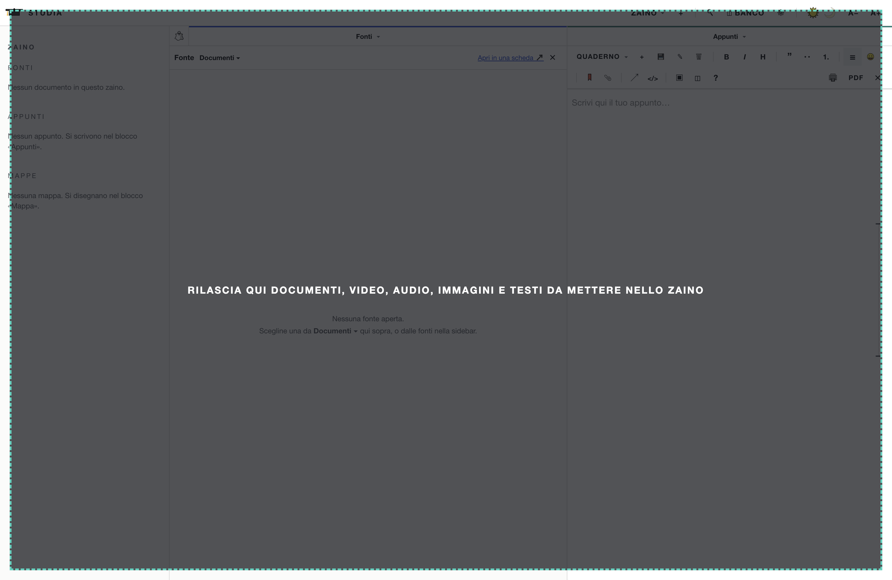
Che cosa entra, e dove va
| Trascini… | Diventa… | Sul disco (dentro Zaini/<zaino>/) | Note |
|---|---|---|---|
| una Fonte (documento) | MATERIALI/PDF/01 nome.pdf + il suo indice in MATERIALI/Indici-PDF/ | copiato, numerato, indicizzato per pagina; il primo si apre da solo. Nessun limite di dimensione. | |
| video .mp4 .mov .mkv .webm .avi .mpeg .mpg | un media nel Player | MATERIALI/Video/01 nome.mp4 | copiato; il primo si apre nel Player. Non viene trascritto. |
| audio .m4a .mp3 .wav .aac .flac .ogg .opus .aiff | un media nel Player | MATERIALI/Audio/01 nome.m4a | il numero è unico fra video e audio (un «03» solo). ⚠️ .ogg .opus .aiff entrano ma non compaiono in sidebar né nel selettore Media. |
| immagini .jpg .jpeg .png .gif .webp .heic | una foto nell'Album Foto | ALBUM/foto nome_id.jpg (+ miniatura in ALBUM/_mini/) | massimo 15 MB e 3000 px sul lato lungo (le più grandi vengono ridotte); i JPEG vengono ricodificati (raddrizzati e senza dati GPS); HEIC solo su macOS. La stessa immagine due volte non fa due voci. |
| testi .md .markdown .txt | un appunto | APPUNTI/Titolo.md | massimo 2 MB. Il titolo: dal frontmatter, altrimenti dal primo «# Titolo», altrimenti dal nome del file. Nasce PERSONALE (senza documento). |
Puoi trascinare più file insieme, anche di tipi diversi: la dispensa e la registrazione della stessa lezione in un colpo solo. Quello che non entra viene detto, con il motivo.

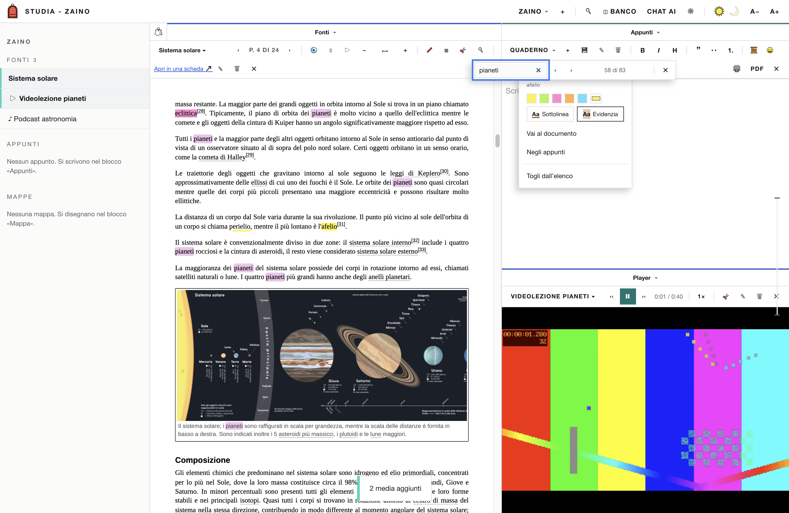
Il numero davanti al nome
Ogni documento riceve un numero a due cifre: 01 Sistema solare.pdf, 02 Scheda fotografata.pdf… Quel numero è importante: è quello che gli appunti e le mappe usano per indicare il documento (pdf:01#p=7 = documento 01, pagina 7). Il numero nuovo è sempre «il più alto + 1», e i numeri dei documenti tolti restano prenotati (vedi le lapidi). Lo stesso file trascinato due volte diventa 03 e 04: niente viene mai sovrascritto.
Il titolo che leggi in sidebar e nella barra è il nome del file ripulito: senza numero, senza estensione, con gli spazi al posto di _ e -. Quindi 03 Dispensa_di-diritto.pdf si legge «Dispensa di diritto».
Rinominare una fonte
Non esiste un comando «Rinomina» per un documento, un video o un audio: il nome è quello del file, e il numero è quello che i rimandi citano. Il consiglio pratico: dai al file il nome giusto prima di trascinarlo. Se proprio devi rinominare a mano nel Finder (dentro MATERIALI/PDF/), tieni il prefisso «01 » e ricorda che le evidenze e i ritagli sono agganciati al nome intero e resterebbero orfani. Le foto invece hanno una didascalia che si può cambiare (menu della card → «Rinomina la didascalia»): cambia l'etichetta, non il file.
La cartella dello zaino, dopo un po' di lavoro
Zaini/sistema-solare/
_zaino.md titolo e data
_lettura.json l'ultima pagina guardata di ogni PDF
_ascolto.json l'ultimo secondo di ogni video/audio
MATERIALI/
PDF/01 Sistema solare.pdf le copie dei documenti
Indici-PDF/01 Sistema solare.json il testo di ogni pagina (per la lente)
Video/01 Videolezione pianeti.mp4
Audio/02 Podcast astronomia.m4a
_rimossi.json le «lapidi» dei documenti tolti
APPUNTI/
Pianeti rocciosi.md un appunto
_indice.md l'indice degli appunti (lo scrive l'app)
_evidenze.json le parole chiave e le evidenze
MAPPE/Il sistema solare.json una mappa
ALBUM/
_album.json l'elenco di ritagli e foto
01 Sistema solare__p001_ab12cd.png un ritaglio (documento, pagina)
foto Foto lavagna_266492c141.jpg una foto
Regola di casa: i tuoi file non si toccano mai. Quando trascini un PDF, StudIA ne fa una copia nello zaino; l'originale resta dov'era. Le cartelle APPUNTI, MAPPE e ALBUM sono tue e nessun automatismo ci scrive dentro (tranne _indice.md, che è un indice).
Appunti e mappe: crearli e riempirli
Un appunto nuovo, e a chi appartiene
Premi + nella barra degli appunti. Si apre una finestrella con due domande: il titolo, e — solo nello zaino — «Nasce dal documento»: a quale documento appartiene questo appunto. Se hai un PDF aperto è già scelto; puoi anche dire «PERSONALE — nessun documento». Conferma, e l'appunto è creato e aperto (avviso «Appunto creato»).
C'è anche una scorciatoia: se cominci a scrivere nel quaderno senza aver creato l'appunto, alla quinta parola StudIA ti chiede il titolo e quello che hai scritto diventa il corpo. Se annulli, l'appunto non è salvato: te lo ricorda con un avviso.
La tendina QUADERNO: quale appunto
Portare dentro il testo del documento: «Appunta»
Selezioni una frase nel PDF, premi Appunta nella barra della selezione, e la frase finisce nell'appunto aperto con il rimando alla pagina. La forma la scegli tu con la riga degli otto stili:
- ¶ senza riquadro:
La contrazione causò… — [Sistema solare, p. 3](pdf:01#p=3) - con riquadro (Nota, Importante, Definizione, Esempio, Dubbio, Attenzione, Da fare): un blocco «Dal documento» con la frase e, sotto, il rimando.
Se il frammento è corto (fino a tre parole piene) viene anche evidenziato e messo fra le parole chiave; l'avviso lo dice: «Appuntato, e aggiunto alle parole chiave.» Se non c'è un appunto aperto, «Appunta» te lo fa creare al volo.
Importare parole chiave, ritagli e immagini
- Una parola chiave → negli appunti: trascina il chip nell'editor, oppure tasto destro sul chip → «Negli appunti». Ci lascia
[perielio](pdf:01#p=4). → sulla mappa: trascina il chip sulla tela; il nodo prende il colore dell'evidenza e il pallino della fonte. - Un ritaglio → negli appunti: dalla bolla «Ritaglio salvato» o dal menu della card «Metti nell'appunto aperto», o trascinando la card nell'editor. Ci lascia
, che nell'anteprima è l'immagine. → sulla mappa: «Metti nella mappa» o trascinando la card sulla tela: nasce un nodo-immagine, ridimensionabile dagli angoli. - Una foto → uguale al ritaglio; in più, appena inserita, una bolla chiede «Va bene tutta» oppure «Solo una parte…» (apre la foto con le forbici già accese, e il pezzo che ritagli prende il posto dell'immagine intera).
- La pagina o il minuto → 🔖 «Cita il punto che stai guardando» inserisce
[p. 7](pdf:01#p=7)o[0:12](video:01#t=12); 📎 ti fa scegliere un altro materiale e la pagina.
 e la bolla che chiede se serviva tutta.Scrivere dentro l'anteprima
Con ◫ (o F9) il blocco si divide in due: a sinistra il markdown, a destra il testo come verrà letto. E la parte destra si può scrivere: clicca un paragrafo, un titolo o un riquadro e quel pezzo torna a essere markdown in un campo; quando esci, l'appunto si aggiorna e il blocco si ri-rende.
- ⌘Invio chiude e tiene quello che hai scritto — Invio da solo va a capo dentro il blocco.
- Esc chiude e annulla: se hai aperto un blocco solo per guardare com'è scritto, esci senza cambiare niente.
- Cliccando un altro blocco, quello aperto si chiude tenendo le modifiche.
- I rimandi e le immagini nell'anteprima restano cliccabili: aprono il documento o l'album, non il campo di scrittura.
StudIA non traduce mai l'HTML dell'anteprima in markdown: il tuo file .md resta l'unica verità, e ogni modifica riscrive soltanto le righe del blocco che hai aperto. È la ragione per cui non si scrive «ovunque» nella parte destra come in un word processor: una traduzione all'indietro sbagliata cambierebbe il tuo testo senza dirlo — e le notazioni di StudIA (rimandi, immagini dell'album, riquadri) non hanno un HTML che si possa ritradurre senza perderle.
Il salvataggio
Non devi ricordarti di salvare. L'appunto si scrive da solo 1,8 secondi dopo l'ultimo tasto (un pallino ● in barra dice «Modifiche non salvate» nel frattempo), e subito quando cambi appunto, chiudi l'editor, passi a un altro zaino o la finestra va in secondo piano. Quello che arriva da un gesto (Appunta, una parola chiave, un minuto) si scrive subito. ⌘S salva a mano, se ti fa stare tranquillo. La mappa si salva 1,2 secondi dopo ogni modifica, e sempre prima di chiuderla.
Rinominare un appunto e assegnarlo a un documento
La matitina ✎ nella barra degli appunti apre «Nuovo titolo dell'appunto». Nello zaino ha sotto la stessa tendina «Nasce dal documento»: è l'unico posto in cui puoi cambiare il documento di un appunto già esistente, o dichiararlo PERSONALE. Cambiando il titolo cambia anche il nome del file (Titolo.md); cambiando solo il documento l'avviso dice «Appunto: nasce da «Sistema solare»».
Una mappa nuova, e come si costruisce
- Nel blocco Mappa premi Mie (nello zaino «Generata» è vuota: «Nessuna lezione aperta»).
- Premi +, dai un titolo («Titolo della nuova mappa»), conferma. La mappa nasce con un nodo solo: il titolo.
- Seleziona un nodo (click) e premi Tab per aggiungere un figlio, Invio per un nodo accanto. Si apre subito la casella per scrivere il testo; Invio conferma.
- Doppio click sul vuoto crea un nodo libero dove clicchi. Doppio click su un nodo (o F2) lo rinomina.
- Per collegare due nodi: trascina dalla porta (il cerchietto sul bordo del nodo) fino all'altro nodo, oppure tasto destro → «Collega a…» e click sul nodo d'arrivo. Il legame nasce muto e ti chiede subito la parola («ha un», «richiede», «causa»…).
- Trascina i nodi dove vuoi: la posizione resta fissata. ⌘Z annulla (fino a 20 passi).
Rinominare una mappa e assegnarla a un documento
La matitina ✎ nella barra della mappa apre «Nuovo titolo della mappa» con la tendina «Nasce dal documento», come per gli appunti. Il titolo diventa anche il nome del file (MAPPE/Il sistema solare.json). Il documento di appartenenza è un'etichetta: serve a te per ricordare da dove viene la mappa (la sidebar non filtra per documento).
Riquadri, emoji, guida delle notazioni
Eliminare le fonti (e che cosa succede a quello che ci avevi scritto sopra)
Quando togli un documento dallo zaino, StudIA lo manda nel Cestino del computer (non lo cancella) e al suo posto lascia una piccola lapide: un biglietto che dice «qui c'era il documento 01, si chiamava così, aveva questa impronta». A che cosa serve? Se un giorno ritrascini lo stesso documento, StudIA lo riconosce dall'impronta, gli ridà il suo numero di prima, e tutti gli appunti, le mappe, le parole chiave e i ritagli che lo citavano tornano a funzionare da soli. Nel frattempo quelle cose non vengono cancellate: restano lì, in attesa.
Come si toglie un documento
- Apri il documento nel blocco Fonti (il cestino c'è solo con un documento aperto, e solo nello zaino).
- Premi il 🗑 nella barra del documento, accanto alla ✕ («Togli questo documento dallo zaino»).
- Leggi la domanda: ti dice quante cose ci si appoggiano — parole chiave, appunti, mappe, ritagli — e che restano dove sono. Conferma.
- Il file va nel Cestino, la lapide viene scritta, e l'avviso dice: ««Sistema solare» è nel Cestino: reimportandolo si riaggancia».
Che cosa resta, e come si comporta
- Le parole chiave restano nello strumento Parole chiave. Se dal loro menu premi «Vai al documento», il blocco Fonti risponde «Non riesco ad aprire questo documento…»: normale, il file non c'è.
- Gli appunti restano tali e quali. I rimandi
[Sistema solare, p. 3](pdf:01#p=3)restano scritti; cliccandoli il documento non si apre (dopo un riavvio l'avviso dice «Il documento di questo rimando non è fra i materiali del corso»). Nella tendina della rinomina l'appunto risulta di «Sistema solare (non più nello zaino)». - I ritagli restano nell'archivio; «Alla fonte» dà lo stesso errore di sopra.
- I nodi di mappa restano, col loro pallino; «Vai alla fonte» non trova il documento.
- Il numero (01) resta prenotato: un documento nuovo prenderà 02, non 01.
E le altre cose?
| Che cosa | Dove sta il comando | Cestino o cancellazione? | Lapide? |
|---|---|---|---|
| Documento PDF | 🗑 nella barra del documento | Cestino di sistema | Sì (riaggancio al ritorno) |
| Video / audio | 🗑 nella barra del Player | Cestino di sistema | No: reimportandolo prende un numero con la regola di sempre (il vecchio, se era l'ultimo; altrimenti uno nuovo) |
| Foto o ritaglio | menu della card → «Elimina…» | Cancellazione vera (chiede conferma e dice in quanti appunti/mappe è usata) | No |
| Appunto | 🗑 nella barra degli appunti | Cancellazione vera («L'operazione non è reversibile») | No |
| Mappa | 🗑 nella barra della mappa | Cancellazione vera («non si può annullare») | No |
| Nodo di mappa | menu del nodo → «Elimina il nodo», o Canc | — | ⌘Z lo riporta |
| Evidenza / parola chiave | «Cancella evidenziatura» nella barra della selezione; «Togli dall'elenco» nel menu del chip | voce tolta dall'elenco | No |
Rinominare ed eliminare uno zaino
Gli zaini si governano da un posto solo: ⚙ Impostazioni → scheda «Zaino». Lì c'è l'elenco «I tuoi zaini», con quanti documenti contengono e, accanto a ciascuno, due comandi: ✎ rinomina e 🗑 elimina. Non li trovi nella tendina ZAINO, né in sidebar, né col tasto destro: è voluto, perché eliminare è il gesto più grande che si possa fare.
In cima alla stessa scheda c'è 📖 Apri la guida allo ZAINO: è questa guida, che viaggia dentro l'app. Si apre in una finestra sua, e la puoi tenere accanto a StudIA mentre provi i gesti.
Rinominare uno zaino
Premi il ✎ accanto allo zaino, scrivi il nome nuovo, conferma. Cambia il titolo che leggi ovunque — tendina, elenco, Impostazioni — e il nome della cartella sul disco: «Storia romana» → «Storia romana antica» sposta Zaini/storia-romana/ in Zaini/storia-romana-antica/. Tutto quello che c'era dentro (documenti, media, appunti, mappe, ritagli) viaggia con la cartella, e se lo zaino era aperto resta aperto, con il banco e i riquadri come li avevi lasciati.
Il nome nuovo deve essere libero, come alla creazione: non puoi chiamare uno zaino come un altro zaino o come un corso che hai già («esiste già un corso o uno zaino con questo nome»). E se cambi solo le maiuscole o la punteggiatura — «Diritto pubblico» → «Diritto Pubblico» — la cartella non si sposta: il nome di cartella è lo stesso, cambia solo il titolo.
Eliminare uno zaino
- Premi ⚙ in alto a destra, poi la scheda «Zaino».
- Premi il 🗑 accanto allo zaino da eliminare («Elimina «Storia romana»: la cartella intera va nel Cestino»). Attenzione a non confonderlo con il ✎ che gli sta accanto.
- Leggi la domanda e conferma.
- L'intera cartella dello zaino — documenti, media, appunti, mappe e ritagli — va nel Cestino di sistema. Da lì puoi ancora ripescarla, ma StudIA non la vedrà più. Avviso: «Zaino «Storia romana» nel Cestino».
Se elimini lo zaino aperto, StudIA prima chiude tutto per bene (salva l'appunto e la mappa in sospeso). Se invece sposti la cartella nel Cestino a mano dal Finder (ad app chiusa) il risultato sul disco è lo stesso, ma nel computer resta la memoria del banco di quello zaino: uno zaino futuro con lo stesso nome la erediterebbe. Meglio farlo dall'app.
Tasti rapidi (macOS e Windows)
Su Windows ⌘ = Ctrl, ⌥ = Alt, ⇧ = Maiusc. Regola generale: le combinazioni valgono sempre, anche mentre scrivi; le lettere sole del player valgono solo se non stai scrivendo in un campo di testo.
Non devi tradurre a mente: i suggerimenti dell'app (quelli che compaiono passando il mouse su un bottone) scrivono ⌘F su un Mac e Ctrl+F su Windows. Questa tabella li elenca nella forma di macOS perché è quella delle immagini.
Ovunque nell'app
| Che cosa fa | macOS | Windows | Dove vale |
|---|---|---|---|
| Segna il minuto del video/audio negli appunti (crea l'appunto se manca) | ⌘⇧C | CtrlShiftC | sempre, anche scrivendo; serve un media aperto |
| Cerca nel documento (se il fuoco è sul documento o in nessun campo, con un PDF aperto) / cerca nello zaino (altrimenti: per esempio dall'editor degli appunti, anche col PDF aperto) | ⌘F | CtrlF | ovunque |
Cerca la frase esatta, o la parola intera: "sistema solare" | le " attorno | le " attorno | in tutte e due le ricerche (lente e documento) |
| Nella ricerca: risultato successivo / precedente | Invio / ⇧Invio | Invio / ShiftInvio | nel campo di ricerca del documento; nella lente ↓ ↑ scorrono e Invio apre |
| Salva l'appunto | ⌘S | CtrlS | ovunque (salva comunque da solo) |
| Stampa l'appunto aperto, o la mappa | ⌘P | CtrlP | ovunque, anche col cursore nell'editor |
| Commuta l'anteprima dell'appunto (▣) | ⌘J | CtrlJ | nell'editor degli appunti |
| Scrittura e anteprima affiancate (◫) | F9 | F9 | nell'editor degli appunti |
| Forbici «al volo»: ritaglia mentre tieni premuto | ⌘ + trascina | Ctrl + trascina | su PDF, foto o video |
| Zoom del PDF / del Confronto / della foto | ⇧ + rotella | Shift + rotella | sopra la pagina |
| Zoom della mappa | rotella | rotella | sopra la tela |
| Zoom di tutta l'app | ⌘+ ⌘− ⌘0 | Ctrl+ Ctrl− Ctrl0 | menu View del sistema (non è lo zoom del PDF) |
| Chiudi uno strato alla volta: forbici → menu della selezione → barra della selezione → ricerca nel documento → mappa (e il suo pannellino ⚙) → pannellini e finestre → documento | Esc | Esc | ⚠️ un Esc «a vuoto» con un PDF aperto chiude il documento (il blocco resta) |
| Crea lo zaino / conferma una finestrella / annulla | Invio / Esc | Invio / Esc | nel campo del nome; nelle finestre «Titolo…» |
| Schermo intero · chiudi finestra · ricarica l'app | ⌃⌘F · ⌘W · ⌘R | F11 · CtrlW · CtrlR | menu del sistema (su Windows la barra dei menu è visibile, in inglese) |
Nel Player (video e audio)
| Che cosa fa | macOS | Windows | Dove vale |
|---|---|---|---|
| Riproduci / pausa | K o spazio | K o spazio | media aperto, non stai scrivendo |
| Indietro / avanti di 10 secondi | J / L | J / L | idem |
| Velocità più lenta / più veloce (0,75× … 2×) | < / > | < / > | idem |
| Indietro / avanti di 5 secondi | ← / → | ← / → | solo col fuoco dentro il Player (dopo un click sul video) |
Nell'editor degli appunti (col cursore nel testo)
| Che cosa fa | macOS | Windows |
|---|---|---|
| Grassetto · corsivo · link | ⌘B · ⌘I · ⌘K | CtrlB · CtrlI · CtrlK |
| Titolo più piccolo · più grande | ⌘H · ⇧⌘H | CtrlH · CtrlShiftH |
| Citazione · elenco puntato · elenco di caselle · pulisci formattazione | ⌘' · ⌘L · ⇧⌘L · ⌘E | Ctrl' · CtrlL · CtrlShiftL · CtrlE |
| Immagine · elenco numerato · blocco di codice | ⌘⌥I · ⌘⌥L · ⌘⌥C | CtrlAltI · CtrlAltL · CtrlAltC |
| Anteprima · affiancato · editor a tutto schermo | ⌘P · F9 · F11 | CtrlP · F9 · F11 |
| Continua l'elenco · rientra · togli il rientro | Invio · Tab · ⇧Tab | Invio · Tab · ShiftTab |
Nella mappa (registro «Mie», col fuoco fuori dai campi di testo)
| Che cosa fa | macOS | Windows | Serve |
|---|---|---|---|
| Aggiungi un figlio · un nodo accanto | Tab · Invio | Tab · Invio | un nodo selezionato |
| Rinomina il nodo | F2 (o doppio click) | F2 | un nodo selezionato |
| Elimina il nodo | Canc / ⌫ | Canc / Backspace | un nodo selezionato |
| Annulla (fino a 20 passi) | ⌘Z | CtrlZ | — |
| Conferma / annulla la casella di testo | Invio / Esc | Invio / Esc | casella aperta |
| Salva la disposizione in una memoria senza passare dal menu | ⌥ + click sullo slot | Alt + click | — |
| Nuovo nodo dove clicchi · parola del legame | doppio click sul vuoto · doppio click sul legame | idem | — |
Non c'è un tasto per: passare da Corso a Zaino, cambiare zaino, mostrare/nascondere la sidebar, cambiare la forma del banco o lo strumento di un blocco, il tema, A−/A+, la pagina precedente/successiva del PDF (frecce ‹ › o rotella), lo zoom del PDF o della mappa da tastiera. Non c'è una schermata «tutte le scorciatoie» dentro l'app: questa tabella è quella. Nota: ⌘⇧C cita solo il minuto del player; per citare la pagina del documento c'è il bottone 🔖 (senza tasto). E ⚠️ nello zaino le frecce ← → premute fuori dai campi di testo (anche col fuoco sul documento o sul player, dove in più saltano di 5 secondi; solo l'editor e la mappa a schermo le fermano) sfogliano in silenzio i capitoli del corso che era aperto prima: non se ne vede niente, ma tornando ai corsi il capitolo può essere cambiato.
Quali PDF si possono importare, e come diventano «lavorabili»
Ci sono PDF «veri», con dentro il testo (quelli fatti da Word, dai siti, dai libri digitali): il computer può leggerlo, selezionarlo, cercarlo. E ci sono PDF che sono solo fotografie di fogli (la scheda fotografata col telefono, la scansione): per il computer sono immagini, e non c'è niente da selezionare. StudIA riconosce da solo di che tipo è il PDF, e per le fotografie propone di «insegnargli a leggere».
I PDF con testo
Appena entrano, StudIA legge il testo di ogni pagina e lo scrive nell'indice del documento (MATERIALI/Indici-PDF/01 nome.json). L'indice non si vede mai: serve solo alla lente per cercare, e a decidere se il documento è una fotografia. È veloce: 266 pagine in meno di un secondo. Da subito puoi selezionare, evidenziare, appuntare, ritagliare, cercare.
I PDF fotografati: il riconoscimento del testo (OCR)
Se più della metà delle pagine ha meno di 200 caratteri di testo, per StudIA il documento è fotografato. Alla fine dell'import ti chiede se vuoi che riconosca il testo. Puoi dire di no: il gesto resta a portata di mano nel bottone Aa↗ della barra del documento, che compare solo per i documenti fotografati.
- Premi Aa↗ (o rispondi OK alla proposta).
- Segui gli avvisi in basso: «Preparo il riconoscimento del testo…», poi «Riconosco la pagina 1 — 1 di 3…», e così via. Se una pagina è storta ti dice che la rilegge raddrizzata.
- Alla fine: «Scrivo il testo dentro il documento…» e poi «Fatto: ora il testo si seleziona, si evidenzia e si cerca.» Il documento si riapre alla stessa pagina.
- Da questo momento il PDF fotografato si comporta come uno vero: selezioni, evidenzi, cerchi. Il bottone Aa↗ sparisce.
Che cosa succede davvero (per chi vuole saperlo)
- Il motore è Tesseract (dentro l'app, italiano + inglese, niente da installare, niente internet). Legge una pagina alla volta e scrive un testo invisibile sopra le immagini, dentro la copia del PDF che sta nello zaino. Il tuo file originale, fuori dallo zaino, non viene toccato.
- Le righe storte fino a 10° vengono seguite; oltre i 2° la pagina viene anche riletta raddrizzata (si tiene la lettura migliore). Le foto «di sbieco», con le righe che convergono, non vengono raddrizzate.
- Tempi misurati: circa 1,7 secondi a pagina su Mac con Apple Silicon (6 secondi su Mac Intel). Memoria: circa 1,3 GB al picco, e il picco non cresce con il numero di pagine: un libro lungo costa tempo, non memoria.
- L'indice ricorda che il documento è stato riconosciuto e quali pagine. Se dopo ritrascini l'originale non riconosciuto, StudIA lo scarta: «già nello zaino come «02 Scheda fotografata.pdf» (testo riconosciuto)».
- Il testo riconosciuto non si vede e non si corregge: serve a selezionare, evidenziare, cercare. Testo brutto è meglio di testo spostato: le parole vengono scritte tutte, anche quelle lette male, perché un buco farebbe slittare la selezione di tutta la riga.
Casi particolari e limiti
| Caso | Che cosa succede |
|---|---|
| PDF protetto da password | Entra (viene copiato) ma non si apre: «Non riesco ad aprire questo documento: No password given». Non c'è modo di inserire la password: toglila prima, con un altro programma. |
| Un file non PDF rinominato .pdf | Entra ma non si apre («Non riesco ad aprire questo documento…»). |
| PDF misto (poche pagine fotografate, la maggior parte con testo) | Non viene proposto il riconoscimento e il bottone Aa↗ non compare: le pagine fotografate restano immagini. |
| PDF con font strani che escono come simboli | Se ci sono più di 200 caratteri per pagina l'app lo considera «con testo»: la lente cerca sul testo sbagliato e non propone l'OCR. Se il testo estratto è pochissimo, viene trattato come fotografia e il riconoscimento aiuta. |
| PDF enormi (centinaia di pagine, decine di MB) | Nessun limite. L'indice e l'OCR lavorano pagina per pagina. |
| Modificare o annotare il PDF | Non si fa: StudIA non scrive nel PDF (tranne il testo invisibile dell'OCR). Le evidenze stanno in APPUNTI/_evidenze.json, i ritagli in ALBUM/. Il PDF resta pulito. |
| Più PDF in linguette | Non c'è: un documento per volta nella Fonte, più eventualmente uno nel Confronto. |
Che cosa non esiste (ancora), e piccole trappole
Per non farti cercare quello che non c'è, ecco l'elenco onesto:
- Rinominare un documento, un video, un audio — non c'è. Dai il nome giusto al file prima di trascinarlo.
- Un bottone «Importa» / «Aggiungi documento» — non c'è: si trascina.
- Esportare la mappa in PNG/SVG — solo stampa e PDF.
- Trascrizione di video e audio nello zaino — no: si guardano e si citano al minuto (la trascrizione è dei corsi).
- Il corso «fantasma»: entrando nello zaino il corso di prima non viene chiuso, solo nascosto. Per questo il badge del Ripasso in alto (se ne hai) mostra i numeri del corso, la mappa «Generata» mostra la lezione di prima e le frecce ← → premute a vuoto sfogliano i suoi capitoli. Nello zaino usa «Mie» e ignora quel badge.
- Su Windows l'app non è ancora stata provata dal vivo (l'installer esiste); tutto ciò che è «Ctrl» in questa guida viene dal codice, non da uno schermo Windows.
Zaino: la cartella dei tuoi materiali senza lezioni generate. Fonte: un documento (PDF), un video o un audio dentro lo zaino. Banco: lo spazio di lavoro diviso in blocchi. Strumento: quello che sta in un blocco (Fonti, Player, Confronto, Appunti, Mappa, Parole chiave, Ritagli, Album Foto). Rimando: l'indirizzo di un punto preciso di una fonte, come pdf:01#p=7 o video:01#t=12. Evidenza / parola chiave: un pezzo di testo evidenziato; se corto, è una parola chiave. Lapide: il segno lasciato da un documento tolto, che permette di riagganciarlo. PERSONALE: un appunto o una mappa che non appartiene a nessun documento.